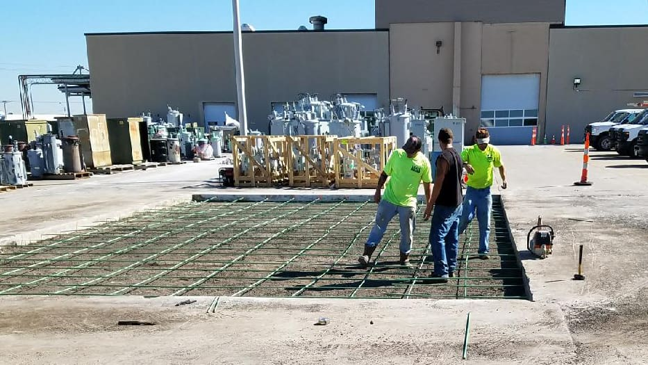

Complex projects require clear solutions and that’s what Max Paving can do for you.
Expanding the company’s scope of work to offering excavation and site preparation in addition to our various kinds of asphalt and concrete constructions, Max Paving is a solution for commercial customers within the Kansas City metropolitan area.
As your project becomes our priority, Max Paving’s team will make the way to “mission completed” both timely and professional. So raise your expectations and we will make it our mission to exceed them – we know you want it completed correctly the first time.

Excavation and Site Preparation
With our experienced crews we do all excavation and site preparation in-house. Your project will be therefore appropriately prepared for the paving process.
We are proud to offer this complete turnkey process to our customers. Convinced that an optimal set-up is vital for the desired result, we will gladly turn your property around before beginning the flatwork.
Excavation details

Commercial Concrete
With experience stretching over two decades, the shared knowledge in concrete construction maintains our confidence in providing customers the service and product they deserve. Expect excellence whether a repair and/or a new installation is on the agenda. Max Paving makes it possible.
Concrete detailsResidential Concrete Driveways
Residential driveway projects have been foundational in our business. The driveway work that Max Paving offers today is exclusively concrete work on larger-sized residential areas. Our attitude is the same though, we aim to satisfy.

Commercial Asphalt
From a piece of land to a level parking lot, or whatever your need might be, Max Paving won’t make it complicated. Our goal is to make the process of improving, repairing, and/or maintaining the area as easy as possible.
We pride ourselves in our communication and problem-solving skills developed throughout the years. With an experienced asphalt crew, we do your project right the first time.
Asphalt detailsGet A Quote Today
We look forward to hearing about your mission, and making it possible with our services.
Prefer to talk? (816) 220-7777